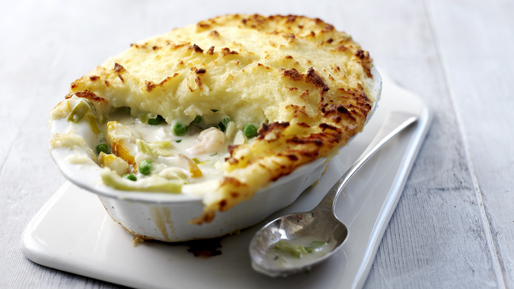

Fisherman's Pie

Description
It's almost like a shepherd's pie but with fish and spinach. Great dish for a cold gloomy day. It's British comfort food at its best.
Ingredients
- 1 pound cod fillets, cut into chunks
- 2 ½ tablespoons all-purpose flour
- 1 ½ cups warm milk, or more as needed
- 1 cup shredded sharp white Cheddar cheese
- 1 (10 ounce) package frozen chopped spinach, thawed and drained
- ½ cup minced onion
- 1 teaspoon salt, or to taste
- ½ teaspoon ground black pepper, or to taste
- 1 clove garlic, pressed
- 2 cups mashed potatoes
- 1 cup shredded yellow Cheddar cheese
- 3 tablespoons butter
Steps
- Preheat the oven to 375 degrees F (190 degrees C).
- Arrange cod in a single layer in a large baking dish; set aside.
- Melt butter in a saucepan over medium-low heat. Whisk in flour, and stir until the mixture becomes paste-like and light golden brown, 2 to 5 minutes.
- Gradually whisk warm milk into the flour mixture and bring to a simmer over medium heat. Whisk until the sauce is thick and smooth, about 5 minutes.
- Whisk in white Cheddar cheese, then mix onion, spinach, salt, and black pepper into the sauce.
- Remove saucepan from heat and stir in garlic. If sauce is too thick, stir in more warm milk, 1 tablespoon at a time.
- Pour sauce over fish in baking dish.
- Layer mashed potatoes on top.
- Bake in the preheated oven for 30 minutes, then sprinkle with yellow Cheddar cheese. Continue baking until fish is easily flaked with a fork, 15 to 20 minutes more.